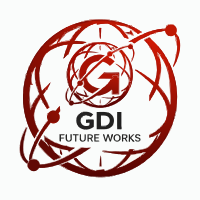

Digital Blueprint for Manual Labor Management
Единая цифровая экосистема для автоматизации найма и управления персоналом
Уникальное решение для строительства, производства и ЖКХ
AI-алгоритмы подбора сокращают цикл найма с дней до минут. Мгновенная фильтрация по опыту, региону и допускам.
100% цифровой след каждой сделки. Полный финансовый контроль и автоматизация выплат реферальных вознаграждений.
Верификация квалификаций в Academy модуле до выхода на объект. Автоматический контроль сроков действия сертификатов.
Маркетплейс труда с AI-метриками. Автоматический расчет Match % между вакансией и рабочим.
LMS-система для обучения и сертификации. Верифицированные допуски ТБ.
Цифровой документооборот (ЭДО). Полный отказ от бумаги и курьеров.
Финансовый движок платформы. Автоматизация реферальных выплат агентствам.
Система ролей и доступов. Защита конфиденциальных данных персонала.
Защищенные коммуникации. Весь контекст сделки в одном чате.
| ДЛЯ КАДРОВЫХ АГЕНТСТВ | ДЛЯ РАБОТОДАТЕЛЕЙ |
|---|---|
|
|
BMS Platform — это новый стандарт индустрии физического труда.
ГОТОВЫ К ЦИФРОВОЙ ТРАНСФОРМАЦИИ?